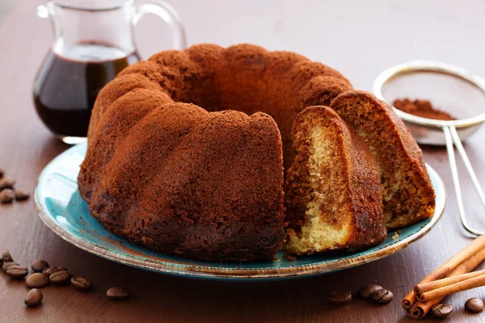

Calorias por Porção: 250 kcal Tempo de Preparo: 20 minutos Tempo de Cozimento: 40 minutos Nível de Dificuldade: Fácil Tipo de Prato: Sobremesa Dietas Especiais: Sem glúten (se usar fubá sem glúten) Ocasiões: Café da tarde, Aniversários Porções: 12 Ingredientes: 2 xícaras de fubá 1 xícara de açúcar 1/2 xícara de manteiga (ou margarina) amolecida 3 ovos 1 ½ xícara de leite 1 colher de sopa de fermento em pó 1 colher de chá de essência de baunilha 1 pitada de sal
Pré-aqueça o forno a 180°C. Unte uma forma de bolo com manteiga e polvilhe com fubá. Misture a manteiga e o açúcar em uma tigela grande até formar um creme claro. Adicione os ovos, um a um, batendo bem após cada adição. Incorpore o leite e a essência de baunilha. Misture bem. Em outra tigela, combine o fubá, o fermento e o sal. Gradualmente, adicione a mistura seca à mistura líquida, mexendo até ficar homogêneo. Despeje a massa na forma preparada e leve ao forno por cerca de 40 minutos, ou até que um palito inserido no centro saia limpo. Deixe esfriar por 10 minutos antes de desenformar. Sirva e aproveite! Pode ser polvilhado com açúcar ou acompanhado de café ou chá.
Calorias por Porção: 250 kcal Tempo de Preparo: 15 minutos Tempo de Cozimento: 40 minutos Nível de Dificuldade: Fácil Tipo de Prato: Sobremesa Dietas Especiais: Sem lactose (se usar leite vegetal) Ingredientes Principais: Cenoura, Farinha, Açúcar Estilo de Culinária: Brasileira Ocasiões: Festas Porções: 8 2 cenouras médias (cortadas em rodelas) 1 xícara de açúcar 1/2 xícara de óleo 3 ovos 2 xícaras de farinha de trigo 1 colher de sopa de fermento em pó
Pré-aqueça o forno a 180°C. Bata no liquidificador as cenouras, açúcar, óleo e ovos até homogêneo. Misture em uma tigela a farinha e o fermento. Incorpore a mistura do liquidificador aos secos, mexendo delicadamente. Unte uma forma e despeje a massa. Asse por cerca de 40 minutos ou até o palito sair limpo. Deixe esfriar antes de desenformar.
Calorias por Porção: 250 kcal Tempo de Preparo: 15 minutos Tempo de Cozimento: 30 minutos Nível de Dificuldade: Fácil Tipo de Prato: Sobremesa Dietas Especiais: Sem lactose (se usar leite vegetal) Ingredientes Principais: Chocolate em pó, Farinha, Açúcar Estilo de Culinária: Brasileira Ocasiões: Aniversários Porções: 10 1 xícara de açúcar 1/2 xícara de óleo 3 ovos 1 xícara de leite (ou leite vegetal) 1 xícara de chocolate em pó 2 xícaras de farinha de trigo 1 colher de sopa de fermento em pó
Pré-aqueça o forno a 180°C. Bata no liquidificador o açúcar, óleo, ovos e leite até misturar bem. Misture em uma tigela o chocolate em pó, a farinha e o fermento. Incorpore a mistura líquida aos ingredientes secos, mexendo delicadamente. Unte uma forma e despeje a massa. Asse por cerca de 30 minutos ou até o palito sair limpo. Deixe esfriar antes de desenformar.
Calorias por Porção: 220 kcal Tempo de Preparo: 10 minutos Tempo de Cozimento: 35 minutos Nível de Dificuldade: Fácil Tipo de Prato: Sobremesa Dietas Especiais: Sem lactose (se usar leite vegetal) Ingredientes Principais: Laranja, Açúcar, Farinha Estilo de Culinária: Brasileira Ocasiões: Aniversários Porções: 10 Ingredientes: 2 laranjas (suco e raspas) 1 xícara de açúcar 1/2 xícara de óleo 3 ovos 2 xícaras de farinha de trigo 1 colher de sopa de fermento em pó
Pré-aqueça o forno a 180°C. Bata no liquidificador o suco das laranjas, açúcar, óleo e ovos até misturar bem. Misture em uma tigela a farinha e o fermento. Incorpore a mistura líquida aos ingredientes secos, mexendo delicadamente. Unte uma forma e despeje a massa. Asse por cerca de 35 minutos ou até o palito sair limpo. Deixe esfriar antes de desenformar
CCalorias por Porção: 400 kcal Tempo de Preparo: 20 minutos Tempo de Cozimento: 30 minutos Nível de Dificuldade: Médio Tipo de Prato: Sobremesa Dietas Especiais: Sem glúten (se usar farinha sem glúten) Ingredientes Principais: Bolo de baunilha, Chantilly, Frutas Estilo de Culinária: Americana Ocasiões: Aniversários Porções: 12 Ingredientes: Para o bolo: 2 xícaras de farinha de trigo 1 ½ xícara de açúcar 1/2 xícara de óleo 1 xícara de leite 3 ovos 1 colher de sopa de fermento em pó 1 colher de chá de essência de baunilha
Pré-aqueça o forno a 180°C. Bata em uma tigela os ovos, açúcar e óleo até formar um creme. Adicione o leite, a baunilha e misture bem. Misture a farinha e o fermento até incorporar. Unte duas formas redondas e despeje a massa, dividindo igualmente. Asse por cerca de 30 minutos ou até o palito sair limpo. Enquanto isso, prepare o chantilly: Bata o creme de leite, açúcar de confeiteiro e baunilha até formar picos firmes. Desenforme os bolos após esfriar e coloque uma camada de chantilly entre as camadas. Cubra todo o bolo com o chantilly e decore com frutas.
alorias por Porção: 350 kcal Tempo de Preparo: 15 minutos Tempo de Cozimento: 30 minutos Nível de Dificuldade: Médio Tipo de Prato: Sobremesa Dietas Especiais: Sem lactose (se usar leite vegetal) Ingredientes Principais: Chocolate em pó, Açúcar, Farinha Estilo de Culinária: Brasileira Ocasiões: Aniversários Porções: 10 Ingredientes: Para o bolo: 1 ½ xícara de açúcar 1/2 xícara de óleo 3 ovos 1 xícara de leite (ou leite vegetal) 1 xícara de chocolate em pó 2 xícaras de farinha de trigo 1 colher de sopa de fermento em pó Para o brigadeiro: 1 lata de leite condensado 7 colheres de sopa de chocolate em pó 1 colher de sopa de manteiga Chocolate granulado para decorar
Pré-aqueça o forno a 180°C. Bata no liquidificador o açúcar, óleo, ovos e leite até misturar bem. Misture em uma tigela o chocolate em pó, a farinha e o fermento. Incorpore a mistura líquida aos ingredientes secos, mexendo delicadamente. Unte uma forma e despeje a massa. Asse por cerca de 30 minutos ou até o palito sair limpo. Enquanto isso, prepare o brigadeiro: Em uma panela, misture o leite condensado, chocolate em pó e manteiga. Cozinhe em fogo médio, mexendo até desgrudar do fundo (ponto de brigadeiro). Desenforme o bolo e cubra com o brigadeiro. Decore com chocolate granulado por cima.
Calorias por Porção: 350 kcal Tempo de Preparo: 30 minutos Tempo de Cozimento: 40 minutos Nível de Dificuldade: Médio Tipo de Prato: Sobremesa Dietas Especiais: Sem glúten (se usar farinha sem glúten) Ocasiões: Aniversários, Chás de Bebê Porções: 12 Ingredientes: Para o bolo: 2 xícaras de farinha de trigo (ou farinha sem glúten) 1 ½ xícara de açúcar 1 xícara de manteiga (ou margarina) 4 ovos 1 xícara de leite 1 colher de sopa de fermento em pó 1 colher de chá de essência de baunilha 1 xícara de morangos picados (frescos ou congelados) Para a cobertura: 1 ½ xícara de creme de leite fresco 2 colheres de sopa de açúcar de confeiteiro 1 colher de chá de essência de baunilha Morangos inteiros para decorar
Pré-aqueça o forno a 180°C. Bolo: Em uma tigela, bata a manteiga e o açúcar até formar um creme claro e fofo. Adicione os ovos, um a um, batendo bem após cada adição. Misture o leite e a essência de baunilha. Em outra tigela, combine a farinha e o fermento. Incorpore os ingredientes secos à mistura líquida, mexendo delicadamente. Adicione os morangos picados à massa e misture com cuidado. Unte uma forma (preferencialmente redonda) e despeje a massa. Asse por cerca de 40 minutos ou até que um palito inserido no centro saia limpo. Deixe esfriar na forma por 10 minutos antes de desenformar. Cobertura: Em uma tigela, bata o creme de leite fresco com o açúcar de confeiteiro e a essência de baunilha até obter picos firmes. Decoração: Desenforme o bolo, cubra com o chantilly e decore com morangos inteiros.
Calorias por Porção: 400 kcal Tempo de Preparo: 30 minutos Tempo de Cozimento: 50 minutos Nível de Dificuldade: Difícil Tipo de Prato: Sobremesa Dietas Especiais: Sem glúten (se usar farinha sem glúten) Ingredientes Principais: Farinha, Açúcar, Fondant Estilo de Culinária: Americana Ocasiões: Casamentos Porções: 12 Ingredientes: Para o bolo: 2 xícaras de farinha de trigo 1 ½ xícara de açúcar 1 xícara de manteiga (ou margarina) 4 ovos 1 xícara de leite 1 colher de sopa de fermento em pó 1 colher de chá de essência de baunilha Para o fondant: 500 g de açúcar de confeiteiro 50 g de gelatina em pó 1/4 xícara de água 1 colher de sopa de glicose Corante alimentício (opcional)
Pré-aqueça o forno a 180°C. Bata a manteiga e o açúcar até formar um creme claro. Adicione os ovos um a um, batendo bem após cada adição. Misture o leite e a baunilha. Em outra tigela, misture a farinha e o fermento. Incorpore os secos à mistura líquida, mexendo delicadamente. Unte uma forma e despeje a massa. Asse por cerca de 50 minutos ou até o palito sair limpo. Enquanto o bolo esfria, prepare o fondant: Hidrate a gelatina na água e aqueça até dissolver. Misture com o açúcar de confeiteiro e a glicose, até formar uma massa lisa. Se desejar, adicione corante. Desenforme o bolo e cubra com o fondant, alisando com as mãos. Decore a gosto com flores, laços ou detalhes.
Calorias por Porção: 400 kcal Tempo de Preparo: 30 minutos Tempo de Cozimento: 50 minutos Nível de Dificuldade: Difícil Tipo de Prato: Sobremesa Dietas Especiais: Sem glúten (se usar farinha sem glúten) Ocasiões: Aniversários Porções: 12 Ingredientes: Para o bolo: 2 xícaras de farinha de trigo (ou farinha sem glúten) 1 ½ xícara de açúcar 1 xícara de manteiga (ou margarina) 4 ovos 1 xícara de leite 1 colher de sopa de fermento em pó 1 colher de chá de essência de baunilha Para o recheio de chocolate: 200 g de chocolate meio amargo 1 xícara de creme de leite 2 colheres de sopa de açúcar Para a cobertura: 1 ½ xícara de creme de leite fresco 2 colheres de sopa de açúcar de confeiteiro 1 colher de chá de essência de baunilha Confeitos ou frutas para decorar
Pré-aqueça o forno a 180°C. Bolo: Em uma tigela, bata a manteiga e o açúcar até formar um creme claro. Adicione os ovos, um a um, batendo bem após cada adição. Misture o leite e a essência de baunilha. Em outra tigela, combine a farinha e o fermento. Incorpore os secos à mistura líquida, mexendo delicadamente. Unte duas formas redondas e divida a massa entre elas. Asse por cerca de 50 minutos ou até que um palito inserido no centro saia limpo. Deixe esfriar por 10 minutos antes de desenformar. Recheio de chocolate: Derreta o chocolate meio amargo em banho-maria. Em uma tigela separada, aqueça o creme de leite e misture com o chocolate derretido e o açúcar até obter um creme liso. Deixe esfriar. Montagem: Coloque uma camada de bolo em um prato, espalhe o recheio de chocolate sobre ela e cubra com a segunda camada de bolo. Cobertura: Bata o creme de leite fresco com o açúcar de confeiteiro e a essência de baunilha até obter picos firmes. Cubra todo o bolo com o chantilly. Decoração: Decore com confeitos, frutas ou detalhes de sua preferência.
Calorias por Porção: 250 kcal Tempo de Preparo: 15 minutos Tempo de Cozimento: 25 minutos Nível de Dificuldade: Fácil Tipo de Prato: Sobremesa Dietas Especiais: Sem glúten (se usar biscoito sem glúten) Ingredientes Principais: Limão, Biscoito, Creme de leite Estilo de Culinária: Brasileira Ocasiões: Festas Porções: 8 Ingredientes: Base: 200 g de biscoito triturado 100 g de manteiga derretida Recheio: 1 xícara de suco de limão 1 xícara de açúcar 1 lata de creme de leite
Triture os biscoitos e misture com manteiga para formar a base. Pressione a mistura em uma forma e leve ao forno por 10 minutos a 180°C. Misture o suco de limão, açúcar e creme de leite em uma panela e aqueça até espessar. Despeje sobre a base e leve à geladeira por 2 horas. Decore com raspas de limão antes de servir.
Calorias por Porção: 300 kcal Tempo de Preparo: 25 minutos Tempo de Cozimento: 30 minutos Nível de Dificuldade: Médio Tipo de Prato: Sobremesa Dietas Especiais: Sem glúten (se usar biscoitos sem glúten) Ocasiões: Almoços em família, Lanches Porções: 10 Ingredientes: Para a base: 200 g de biscoitos de maisena (ou sem glúten) 100 g de manteiga derretida 2 colheres de sopa de açúcar Para o recheio: 4 bananas maduras 1 lata de leite condensado 1/2 xícara de creme de leite 1 colher de sopa de suco de limão Canela em pó a gosto Para a cobertura: 1 ½ xícara de creme de leite fresco 2 colheres de sopa de açúcar de confeiteiro 1 colher de chá de essência de baunilha Banana fatiada e canela para decorar
Pré-aqueça o forno a 180°C. Base: Em um processador, triture os biscoitos até virar uma farofa. Misture com a manteiga derretida e o açúcar até ficar homogêneo. Pressione a mistura no fundo de uma forma de torta, formando uma camada uniforme. Asse por 10 minutos e reserve para esfriar. Recheio: Em uma tigela, amasse as bananas e misture com o leite condensado, o creme de leite, o suco de limão e a canela. Despeje o recheio sobre a base da torta e leve ao forno por mais 20 minutos, até o recheio firmar. Cobertura: Bata o creme de leite fresco com o açúcar de confeiteiro e a essência de baunilha até obter picos firmes. Montagem: Após a torta esfriar, cubra com o chantilly e decore com banana fatiada e uma pitada de canela.
Calorias por Porção: 300 kcal Tempo de Preparo: 20 minutos Tempo de Cozimento: 40 minutos Nível de Dificuldade: Médio Tipo de Prato: Sobremesa Dietas Especiais: Sem glúten (se usar farinha sem glúten) Ingredientes Principais: Maçã, Açúcar, Canela Estilo de Culinária: Americana Ocasiões: Outono Porções: 8 Ingredientes: Massa: 2 ½ xícaras de farinha de trigo 1 colher de sopa de açúcar 1/2 xícara de manteiga gelada 1/4 xícara de água gelada Recheio: 4 maçãs descascadas e fatiadas 1/2 xícara de açúcar 1 colher de chá de canela
Prepare a massa misturando todos os ingredientes e formando uma bola. Deixe na geladeira por 30 minutos. Descasque e corte as maçãs em fatias, misturando com açúcar e canela. Coloque as maçãs sobre a massa. Cubra com outra camada de massa ou uma streusel de farinha e manteiga. Asse a 180°C por 40 minutos ou até dourar.
Calorias por Porção: 320 kcal Tempo de Preparo: 30 minutos Tempo de Cozimento: 30 minutos Nível de Dificuldade: Médio Tipo de Prato: Sobremesa Dietas Especiais: Sem glúten (se usar biscoitos sem glúten) Ocasiões: Almoços em família, Chás de Bebê Porções: 10 Ingredientes: Para a base: 200 g de biscoitos de maisena (ou sem glúten) 100 g de manteiga derretida 2 colheres de sopa de açúcar Para o recheio: 500 g de morangos frescos, limpos e cortados ao meio 1 lata de leite condensado 1/2 xícara de creme de leite 1 colher de sopa de suco de limão 1 colher de chá de essência de baunilha 1 pacote de gelatina em pó (sabor neutro) Para a cobertura: 1 xícara de chantilly (ou creme de leite fresco batido) Morangos inteiros para decorar Açúcar de confeiteiro para polvilhar (opcional)
Pré-aqueça o forno a 180°C. Base: Triture os biscoitos de maisena até virar uma farofa. Misture com a manteiga derretida e o açúcar até ficar homogêneo. Pressione a mistura no fundo de uma forma de torta, formando uma camada uniforme. Asse por 10 minutos e reserve para esfriar. Recheio: Em uma tigela, misture o leite condensado, o creme de leite, o suco de limão, a essência de baunilha e a gelatina dissolvida em água (siga as instruções da embalagem). Adicione os morangos cortados à mistura e mexa delicadamente. Despeje o recheio sobre a base da torta e leve à geladeira por pelo menos 2 horas, ou até que o recheio esteja firme. Cobertura: Bata o chantilly até obter picos firmes. Montagem: Após a torta estar firme, cubra com o chantilly e decore com morangos inteiros. Se desejar, polvilhe açúcar de confeiteiro por cima.
Calorias por Porção: 350 kcal Tempo de Preparo: 30 minutos Tempo de Cozimento: 40 minutos Nível de Dificuldade: Médio Tipo de Prato: Salgado Ocasiões: Almoços em família, Chás de Bebê Porções: 8 Ingredientes: Para a massa: 2 xícaras de farinha de trigo 1/2 xícara de manteiga 1 ovo 1/4 xícara de água gelada 1 colher de chá de sal Para o recheio: 2 xícaras de frango cozido desfiado 1 cebola picada 1 tomate picado 1/2 xícara de milho 1/2 xícara de creme de leite 1 colher de chá de tempero a gosto Sal e pimenta a gosto
Pré-aqueça o forno a 180°C. Massa: Misture a farinha, a manteiga, o ovo, o sal e a água até formar uma massa homogênea. Deixe descansar por 15 minutos. Recheio: Refogue a cebola, adicione o tomate e o frango desfiado. Misture o milho, o creme de leite e tempere a gosto. Montagem: Abra a massa em uma forma de torta, coloque o recheio e cubra com a massa restante. Faça furos na superfície. Asse por cerca de 40 minutos, ou até dourar.
Calorias por Porção: 250 kcal Tempo de Preparo: 25 minutos Tempo de Cozimento: 35 minutos Nível de Dificuldade: Fácil Tipo de Prato: Salgado Ocasiões: Almoços em família, Lanches Porções: 8 Ingredientes: Para a massa: 2 xícaras de farinha de trigo 1/2 xícara de óleo 3 ovos 1/2 colher de chá de sal 1/2 xícara de água gelada Para o recheio: 1 xícara de abobrinha ralada 1 xícara de cenoura ralada 1/2 xícara de queijo ralado 1/2 cebola picada Sal e pimenta a gosto
Pré-aqueça o forno a 180°C. Massa: Misture todos os ingredientes até formar uma massa homogênea. Reserve. Recheio: Refogue a cebola, adicione os legumes e cozinhe até murcharem. Misture o queijo e tempere. Montagem: Despeje metade da massa em uma forma, coloque o recheio e cubra com o restante da massa. Asse por cerca de 35 minutos, ou até dourar.
Calorias por Porção: 300 kcal Tempo de Preparo: 20 minutos Tempo de Cozimento: 30 minutos Nível de Dificuldade: Fácil Tipo de Prato: Salgado Ocasiões: Cafés da manhã, Lanches Porções: 8 Ingredientes: Para a massa: 2 xícaras de farinha de trigo 1/2 xícara de manteiga 1 ovo 1/4 xícara de leite 1 colher de chá de sal Para o recheio: 200 g de queijo muçarela ralado 200 g de presunto picado 1/2 xícara de creme de leite Sal e pimenta a gosto
Pré-aqueça o forno a 180°C. Massa: Misture todos os ingredientes até formar uma massa homogênea. Deixe descansar por 10 minutos. Recheio: Misture o queijo, o presunto, o creme de leite, sal e pimenta. Montagem: Abra a massa em uma forma, adicione o recheio e cubra com a massa restante. Faça furos na superfície. Asse por cerca de 30 minutos, ou até dourar.
Calorias por Porção: 280 kcal Tempo de Preparo: 25 minutos Tempo de Cozimento: 35 minutos Nível de Dificuldade: Médio Tipo de Prato: Salgado Ocasiões: Almoços em família, Chás de Bebê Porções: 8 Ingredientes: Para a massa: 2 xícaras de farinha de trigo 1/2 xícara de óleo 3 ovos 1/2 colher de chá de sal 1/2 xícara de água Para o recheio: 2 latas de atum 1 cebola picada 1 tomate picado 1/2 xícara de azeitonas picadas 1/2 xícara de creme de leite Sal e pimenta a gosto
Pré-aqueça o forno a 180°C. Massa: Misture todos os ingredientes até formar uma massa homogênea. Reserve. Recheio: Refogue a cebola, adicione o tomate e o atum. Misture as azeitonas, o creme de leite e tempere. Montagem: Despeje metade da massa em uma forma, coloque o recheio e cubra com o restante da massa. Asse por cerca de 35 minutos, ou até dourar.